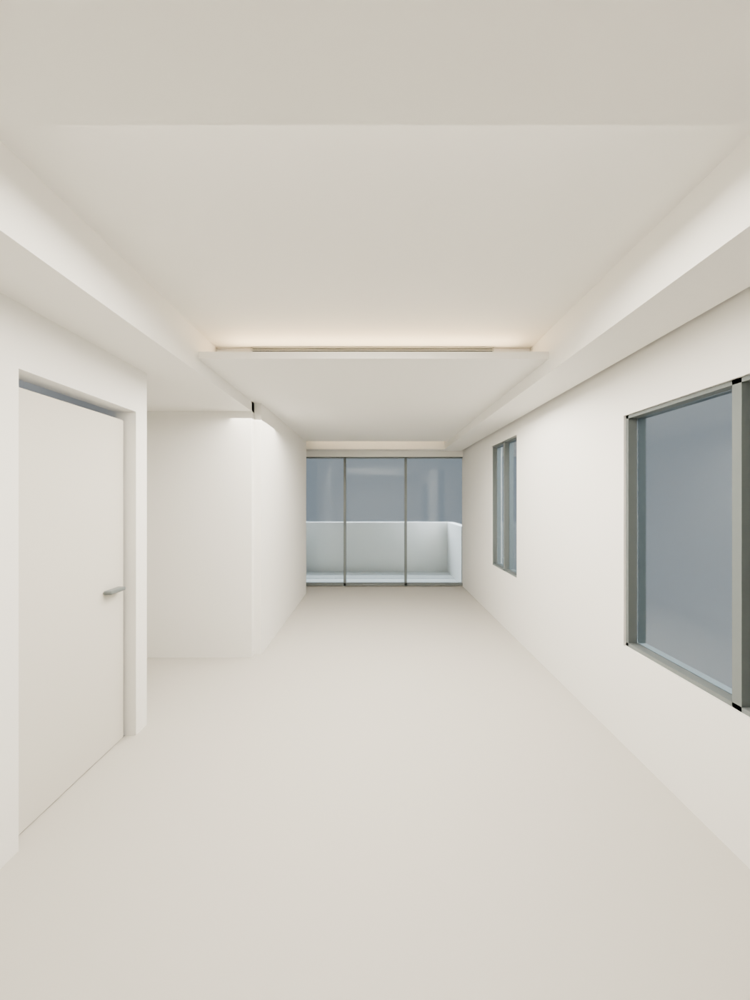

現場照片 × 目前模型：尚未全面符合
門窗的大致方位對得上，但窗框分割、門片、地板、踢腳板、面板／出線、陽台欄杆等仍有明確差異。照片是未完成設計天花的現況；第 69 頁則用來核對裝修完成面，兩者分開判讀。
點下方核對項目，照片會框出對應區域。右圖是同一份模型暫時隱藏家具的檢視，沒有趁核對時修改幾何。
使用者提供的現場照片目前模型 · 隱藏家具、保留設計天花
相近觀看方向，並非同機位精確配準。不得直接以兩張照片的像素長度比較實際尺寸。
選擇一個核對項目
插座資料也分兩層：第 64 頁有 10 處配置點、12 個插座符號及 1 個 C 端點；本照片只能確認可見的面板與出線，無法確認全房數量、電壓、孔型與高度。圖面點位不代表全部已按圖施作。
核對優先順序：先校正現有牆、樑和門窗 → 核對可見機電點位 → 驗證第 69 頁天花與既有樑／管線是否相容 → 再評估家具與風格。精確尺寸仍需圖面標註或現場量測。
完整核對資料